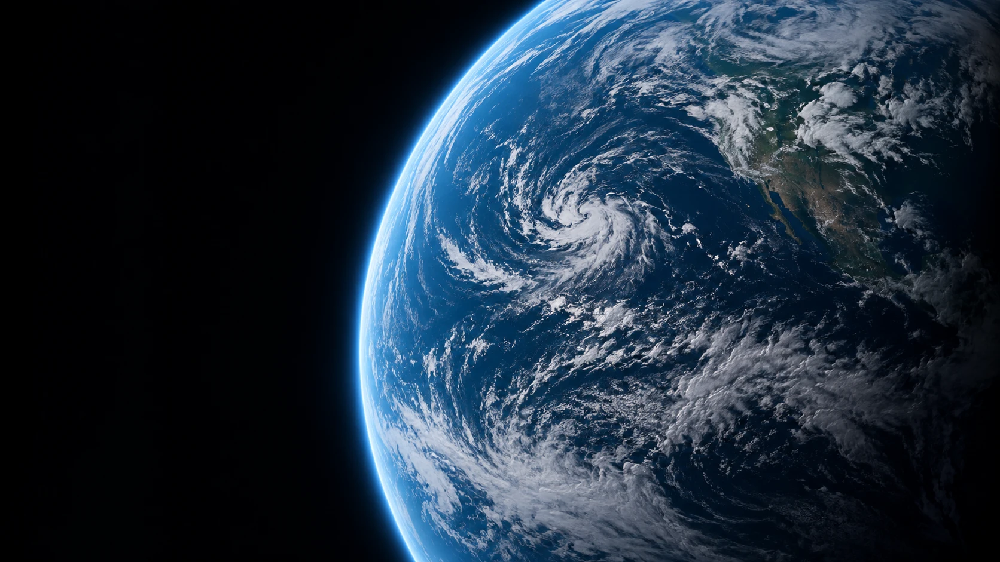

AP–03 / DEEP-SPACE CONCEPTS
Aeon↗
A speculative research concept about worlds beyond familiar horizons. Aeon is a visual exercise in long-distance observation, patient inquiry, and the scale of unanswered questions.
RESEARCH FOCUSPlanetary observation
INSTRUMENT DIRECTIONRemote sensing concept
STATUSConcept study

How do we communicate a distant world without confusing a hypothesis with an observation?
Separate what is seen, what is modeled, and what is imagined. This study uses an original generated planetary image to explore presentation rather than claim a scientific discovery.
AN ILLUSTRATIVE RESEARCH SEQUENCEFrom question
From question
to perspective.
Walk through the four stages of this concept. This is an illustrative workflow, not live mission telemetry.
01 / 04
Frame the question
State the question and distinguish speculation from evidence.